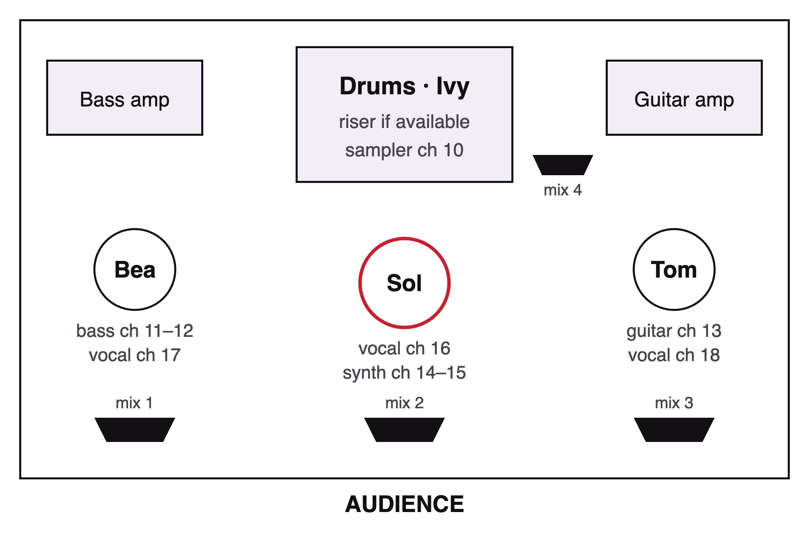

An art-pop four-piece from Nottingham: drum machines, a real drummer and songs about leaving.
Lacemaker are Sol Okafor, Tom Hale, Bea Lindqvist and Ivy Marsh, four friends who met at a Hockley open mic in 2021. Their second album, Leavers, came out on Hockley Records in September 2026. They tour the UK in March 2027 and Europe in April.
Short bio. Free to use as it is.
Free to use. Credit: tyt_holodno / Unsplash.
Lacemaker started in a rehearsal room above a tyre shop in Sneinton, with a borrowed drum machine and Ivy's kit set up around it. The idea was simple: let the machine keep time and let a person hit things on top of it. Five years on, that is still the sound.
Their debut, Cluny (2024), was made in pieces over one winter and sold out its launch at the Bodega. Leavers went the other way: eleven songs recorded in four days at Hatch Studio, the four of them in one room with the doors shut, produced by the band with Ellen Strand.
The songs are about leaving: towns, jobs, people, the version of yourself you were at nineteen. The album takes its name from the Leavers machine, the loom Nottingham's lace was made on, which filled the city's factories with a noise Sol calls "a drum machine the size of a house".
Capacities, and the ones that sold out.
“A drum machine and a drummer having the best argument of the year.”
“Four people in a small room trying to be heard over each other, and winning.”
“The best show I saw in Leeds this year. Nobody left before the encore.”
Four players, 50–60 minute set, 20‑minute changeover.

Input list, 18 channels
We bring our own vocal mics. Four monitor mixes.